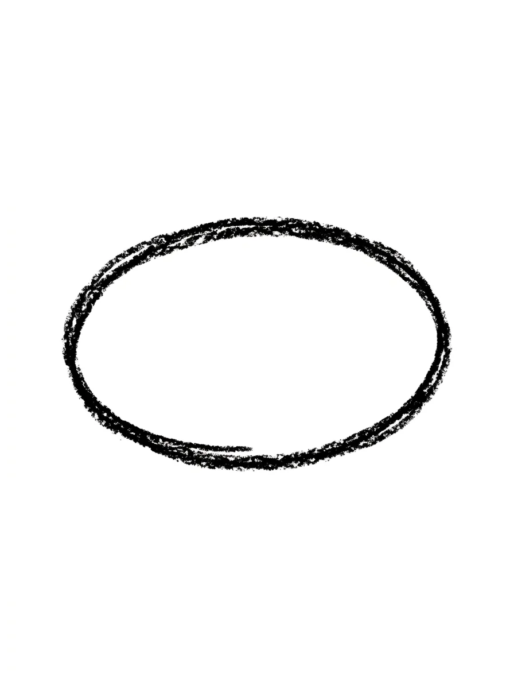
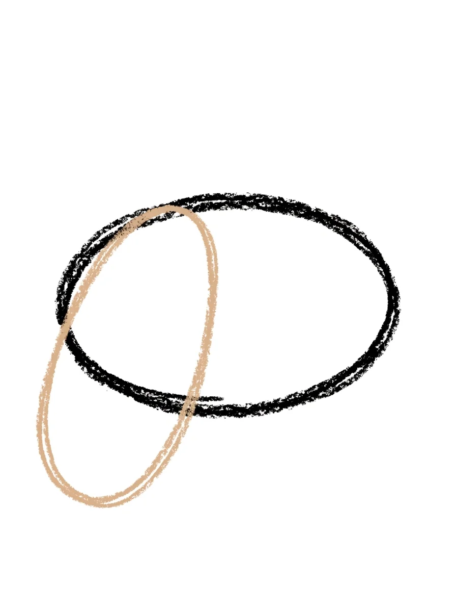
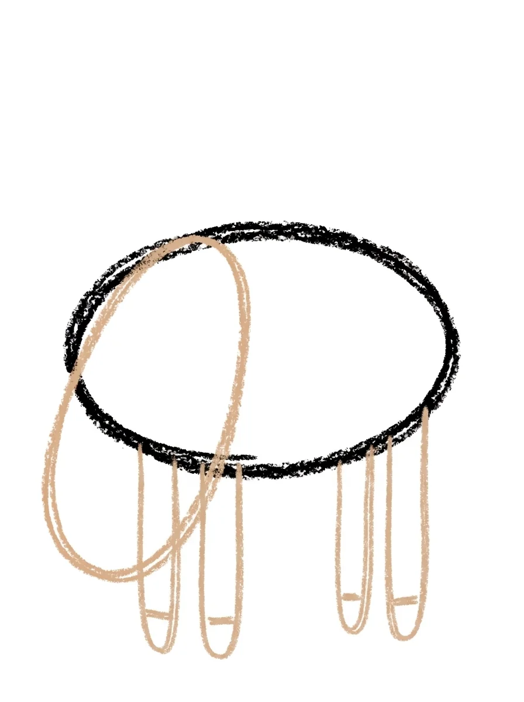
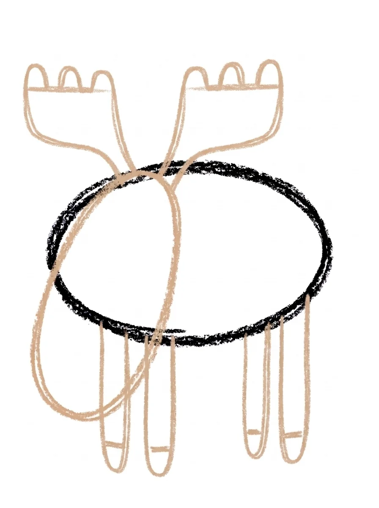
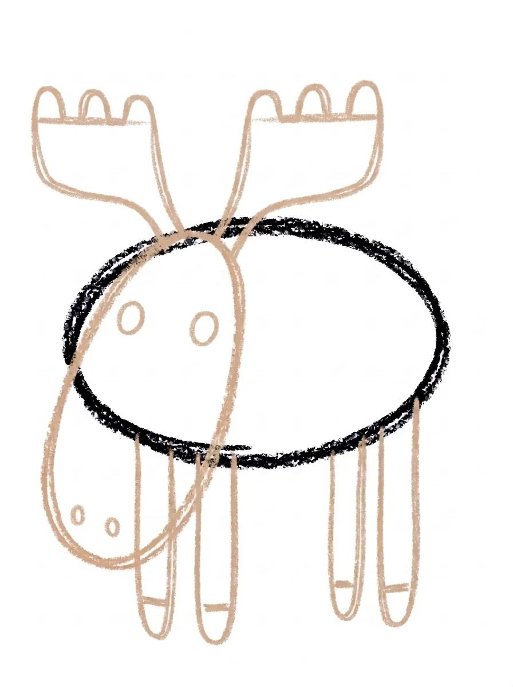
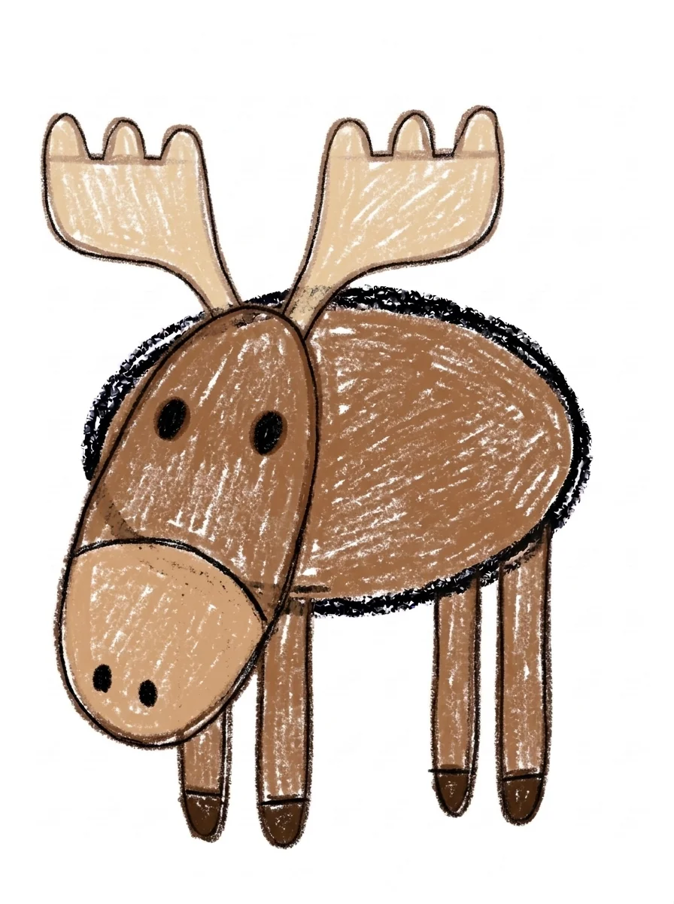

Moose Drawing for Kids How to Draw A Moose in 6 Easy Steps
A moose is a wonderfully goofy animal to draw — a huge oval body, a long droopy snout, and two enormous flat antlers shaped like paddles. Everything is built from ovals and simple lines, so even though the finished moose looks impressive, every single step stays easy.
Quick Answer
Draw a moose from big ovals: one sideways oval for the body, a long tilted oval head with a wide snout at the bottom, four legs with hoof lines, two wide flat antlers with bumpy tops, then dot eyes and nostrils before coloring. Made for ages 3 and up — no signup needed, just print and draw.
At a Glance
- Subject: How to draw a moose
- Ages: 3+
- Steps: 6 steps
- Time: ~15 min
- Difficulty: Easy
- Supplies: Paper, crayons
✏️ Draw Your Moose in 6 Easy Steps
One step per box — this step by step moose drawing shows each new part in a different color so kids can see exactly what changed.
Step 1: The Body

Draw one big oval lying on its side in the middle of your paper. This is your moose's body.
Step 2: The Head and Snout

Draw one long oval at the front end of the body, tilted so it hangs down, with its wide end at the bottom. This is the moose's head and its big snout.
Step 3: The Legs

Draw four long thin legs hanging straight down from the bottom of the body — two near the front and two near the back. Add one short line near the bottom of each leg for the hoof.
Step 4: The Antlers

Draw two wide flat antlers on top of the head, one on each side. Give each antler a flat top edge with three small bumps along the top.
Step 5: The Face

Draw two round dot eyes on the head, one on each side, and two small dot nostrils on the wide bottom end of the head.
Step 6: Color It In

Color your moose! Medium brown for the body, head and legs, lighter tan for the snout, pale tan for the antlers, dark brown for the hooves, and black for the eyes and nostrils. Great drawing!
📊 Moose Drawing by Age
Every age can join in — just adjust the job.
| Age | What they can do | Tip |
|---|---|---|
| 3-4 | Draw the body and head ovals and add straight legs, with antlers kept as two wide simple shapes. | At this age the antlers can be plain wide leaf shapes — flat and big is what reads as a moose. |
| 4-5 | Draw both ovals and the legs, and give each antler its flat top edge with three bumps along it. | The head oval tilts down with the wide end at the bottom — that droopy shape is what makes the snout look like a moose and not a cow. |
| 6+ | Draw the full moose independently and add a lake, pine trees or a smaller calf beside it. | Challenge them to draw the moose standing in a pond, with a wavy water line across its legs. |
🖨️ Download Your Free Moose Drawing Printable
The printable lays out all 6 steps one per box, big enough for little hands — kids draw right alongside each step.
⬇️ Download Free Printable 🖨️ Print🎁 Free printable for ages 3+
More Drawing Pages
Tap any picture to open its tutorial and draw along step by step.
Moose Antler Dress-Up
Those big flat antlers are a perfect canvas. Decorate your finished moose's antlers with drawn flowers, leaves, berries, or a tiny bird perched on top — real moose would never allow it, but drawn moose are very patient. Count the decorations together, then count the antler bumps: three on each side. Older kids can take it further and draw the moose a whole northern forest of pine trees, a lake, and falling snow or autumn leaves to match your season.
What You'll Need to Draw A Moose
You need paper, a pencil and crayons or markers in a small range of browns: medium brown for the body, head and legs, lighter tan for the snout, pale tan for the antlers, dark brown for the hooves, and black for the eyes and nostrils. If you only have one brown, the moose still works — use it everywhere and press lighter for the snout and antlers.
What They're Learning
This tutorial practices ovals in contrasting proportions — a wide body oval against a long, tilted head oval — which teaches kids that the same shape changes meaning when it is stretched. The legs repeat the straight-line-plus-hoof pattern used across animal drawing, and the antlers introduce a flat edge with bumps, a new kind of outline. There is gentle counting throughout: four legs, two antlers, three bumps per antler, two eyes and two nostrils, all in matching pairs.
Make It Yours
Set the moose in its world: a wavy water line across its legs makes it a moose standing in a lake, and triangle pine trees behind it complete a northern forest. A winter moose can wear a drawn scarf, and an antler-free version with a small calf beside it makes a moose family. Kids also enjoy decorating the wide antlers with drawn flowers, leaves or a perched bird — the flatter and bigger the antlers, the better the canvas.
🛒 Our Favorite Drawing Supplies
These are the supplies we reach for in our own home — washable (because kids), quality paper, and enough colors to avoid fights.
As an Amazon Associate, MomYouNeedThis earns from qualifying purchases — at no extra cost to you.
💡 Moose Drawing Tips for Parents
Step 2 decides whether this reads as a moose. The head is one long oval tilted so it hangs down, wide end at the bottom — moose carry a long face with a big low snout, and nostrils are dotted on that wide bottom end in Step 5. If the head comes out upright or round, the animal drifts toward cow or horse, so it is worth redrawing just that oval before continuing; the rest of the steps will fall into place on a well-hung head.
Guard the antler shape in Step 4: wide and flat, like paddles, with a flat top edge and three bumps — not branching like a deer's. It is the single most moose-like feature on the page. Draw the first one together, then let your child do the second; uneven paddles are fine and honestly realistic, since no real moose has a perfectly matched pair.
Moose in the Real World
Moose are the largest members of the deer family — a big bull moose can stand taller at the shoulder than most grown-ups, with antlers spreading wider than a doorway. Those antlers are not fans for show; only the males grow them, they fall off each winter like the deer's, and a fresh set grows back every spring and summer.
Moose are built for the cold north: long legs for wading through deep snow and marshes, and a flap of skin hanging under the throat called a bell. They are strong swimmers who will cross lakes without hesitation, and they eat water plants by the mouthful. Ask your child whether their moose is mid-lake or mid-forest — it changes the whole background.
✋ Warm-Up: Paddle Shapes
Warm up with the moose's signature: the paddle. Draw big rounded hand-shapes — a mitt with bumps along the top edge — in several sizes. Then practice the moose's other anchor: four long straight legs beneath one long line. Legs and paddles, rehearsed separately, make the assembled animal much less intimidating.
Antler paddles that come out different sizes are biologically accurate — real moose rarely match perfectly. The wobble worth fixing is a leg that stops short of the body; extend it upward until it lands. Moose are tall because their legs connect.
📖 Give Your Moose a Story
A moose is a quiet giant with a whole northern forest to wander. Where is yours headed — across a lake at dawn, into a pine forest, or straight through the deepest snowbank because it can? A dictated sentence or two under the drawing gives the giant a destination, and big animals carry big stories well.
The deer tutorial is the moose's smaller woodland cousin. Drawing both lets your child compare the family's two ends — and settle which antlers win, branches or paddles.
📚 Keep Exploring
- ✏️ All 76 Drawing Tutorials 76 free step-by-step drawing tutorials for kids.
- 🐾 Animal Coloring Free printable animal coloring pages for little learners.
- ✏️ Drawing Practice Free printable drawing pre-writing worksheet for toddlers.
❓ Moose Drawing FAQs
What is the easiest way to draw a moose?
Use two ovals: a big sideways oval for the body and a long oval at the front, tilted down with its wide end at the bottom, for the head and snout. Add four legs, two wide flat antlers, dot eyes and nostrils — the six steps build it shape by shape.
What age is this moose drawing for?
It is made for ages 3 and up. Younger kids can handle the two ovals and legs with help on the antlers, while older kids can complete all six steps, including the bumpy antler tops, on their own.
What supplies do we need?
Paper and a pencil for drawing, plus crayons or markers for coloring: medium brown, lighter tan, pale tan, dark brown and black. That is the whole palette — moose are a three-browns animal, which keeps coloring simple.
Is the printable really free?
Yes — every printable on MomYouNeedThis is 100% free to download and print. No signup, no payment, just tap the download button.
How do I print it?
Open the free PDF and print it at 100% scale, not 'fit to page', so the step pictures come out at the size they were designed. One page is the whole tutorial, and you can print fresh copies whenever your child wants another try. The print button opens the full-size page in a new tab if you prefer to print from there.
What is the difference between moose antlers and deer antlers?
Deer antlers branch like little trees, one line splitting into smaller lines. Moose antlers are wide flat paddles — in this tutorial, a flat top edge with three small bumps. If your child's moose has branching antlers it will quietly turn into a deer, so the flat paddle shape is the detail to protect.
Why does the moose's head hang down like that?
A moose's face is long, and its famous big nose and lips sit low at the end of it. Drawing the head as a long oval tilted down, wide end at the bottom, puts the snout exactly where a moose carries it, with the nostrils dotted on that wide bottom end in Step 5.
Do female moose have antlers?
Only the males, called bulls, grow antlers. A moose without antlers is a female, called a cow — so skipping Step 4 gives you a perfectly accurate moose, and adding a small antler-free calf beside her makes a moose family.